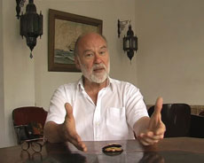

|
CORA PIANTONI
www.piantoni.de

Die fotografischen Serien und Videoarbeiten von Cora Piantoni (*1975 in München) sind oftmals als dokumentarische Untersuchungen angelegt, die sich mit dem Erzählen von (Lebens-) Geschichten befassen. In der Galerie Weltraum versammelt sie Videoarbeiten, die sich mit verschiedenen Seemann-Klischeesauseinandersetzen und das Thema der Schifffahrt immer wieder auf individuelle Lebensentwürfe zurückbinden.
In «Anderssohn» (2009) erzählt der Sohn eines Matrosen aus seiner von Frauen und einem abwesenden Vater geprägte Kindheit. Die fehlende Beziehung zu seinem Vater wurde für den Sohn zu einer Projektionsfläche von unerfüllten Erwartungen. Anderssons Erinnerungen zeigen die Diskrepanz auf zwischen dem aufgeladenen Bild des Matrosen, das bis heute für Abenteuer auf See in einer Gesellschaft mit eigenen Gesetzmässigkeiten steht und dem Alltag der in der Heimat bleibenden Familienmitglieder, die ihr Leben ohne den Ehemann und Vater organisieren müssen.
Die Fotografien und die beiden Filme «Sailors in Constanta Harbour» (2010) und «A Box of Letters» (2010) entstanden im Rahmen einer Recherche zur Seefahrt am Schwarzen Meer in Rumänien. Neben der Familiensituation der nach einem Leben auf See im Hafen sesshaft gewordenen Lotsenboot-Kapitäne wird auf die besondere Stellung der Seeleute unter den diktatorischen kommunistischen Systemen Osteuropas eingegangen: anders als der Grossteil der Rumänen konnten die Matrosen mit ihren Schiffen in den Westen reisen und von dort begehrte Waren mitbringen und in ihrer Heimat weiterverkaufen. Diese nicht unerhebliche Freiheit lässt sie auch den Systemwechsel 1989/90 als weniger einschneidende Veränderung wahrnehmen. «A Box of Letters» stellt ihnen die Erzählungen der Frauen gegenüber, die sich in einem Club für die Angehörigen der Seeleute engagieren.
Das Programm:
Anderssohn | 2009 | 4’31’’
Sailors in Constanta Harbour | 2010 | 7’58’’
A Box of Letters | 2010 | 9’25’’
Cora Piantoni, geb. 1975 in München, lebt und arbeitet in München und Zürich. Studium an der Hochschule für Gestaltung und Kunst in Zürich und an der Akademie der bildenden Künste in München. Sie ist seit 2007 Fotografin des Festivalmotivs von UNDERDOX.
Ausstellungen (Auswahl):
2010 Kontrolle/Irrtum, Galerie Royal, München, Bless my homeland forever. I, too, will try to forget..., Kunsthalle Exnergasse, Wien, A Thousand Endless Tales - Dancing the Line of Flight, White Space, Zürich | 2009 Event Horizon, Ausstellungsraum Klingental, Basel, Zeichen und Wunder, Entrance Gallery, Prag, Palacze / The Stokers , Photomonth, Krypta u Pijarow, Krakau, Radio Echo, Cirkulationscentralen, Malmö | 2008 Turning Point, Alpineum Produzentengalerie, Luzern, Prototypen, Stftung Brandenburger Tor, Berlin, Knorke Gören, Kwadrat, Berlin, Position Fotografie, Galerie der Künstler, München, Kyrgyz National Museum of Fine Arts, Bishkek | 2007 In Gesellschaft von Bäumen, Galerie Royal, München, BLOCK, Circuit, Lausanne & Les Complices*, Zürich & Substitut, Berlin, Burggrafschaft, Klenová 2007 | BLOCK, Les Complices*, Zürich 2007, katalog. Galerie Royal, München
zurück
|